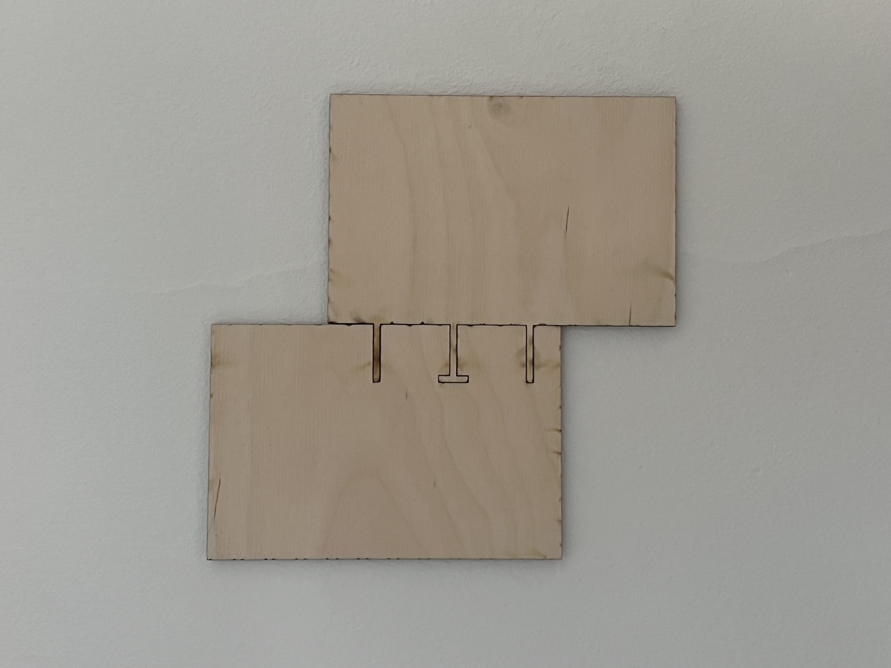

Project 2: Press-Fit Design & Vinyl Cutting
📌 Overview
This project focused on designing and fabricating a **press-fit assembly** using **Fusion 360, Inkscape, and a laser cutter**. I also used a **vinyl cutter** to create a separate design. The goal was to learn **parametric modeling, kerf compensation, and laser cutting techniques**.
📁 Project Files
- Fusion finger design DXF File
- Fusion slot design DXF File
- Inkscape SVG of Fusion design
- Vinyl Design SVG
{kind=link}
{kind=link}
📌 Parametric Design
This project was designed with full parametric control in Fusion 360, allowing for quick adjustments to key values such as material thickness, slot dimensions, and joint types. This approach ensured that the design could be easily modified without redrawing anything.
Below are the main parameters that controlled the model:
| Parameter | Value | Description |
|---|---|---|
| Thickness | 3 mm | Material thickness used for cutting. |
| Width | 150 mm | Total width of the base shape. |
| Height | 100 mm | Total height of the base shape. |
| FilletRadius_slot | Fillet - 0.1 mm | Rounded corners for smoother slot insertion. |
| SlotWidth | Thickness - 0.1 mm (2.90 mm) | Width of the slots for press-fit connection, adjusted for kerf. |
| SlotLength | 25 mm | Depth of each slot for secure fit. |
| T_Width_Slot | T_Width - 0.1 mm (4.90 mm) | Width of the T-slot, adjusted for kerf. |
| T_Height_Slot | T_Height - 0.1 mm (2.90 mm) | Height of the T-slot, adjusted for kerf. |
| T_Height | 3 mm | Full height of the T-tab. |
| T_Width | 5 mm | Full width of the T-tab. |
| Fillet | 1 mm | General fillet applied to edges. |
The use of parametric values allowed for easy adjustments if any fitment issues arose during testing. For example, the slot width was reduced slightly (Thickness - 0.1 mm) to ensure a tight press-fit after accounting for kerf from the laser cutter. The T-joints were also parametrically controlled so that they could be modified for better interlocking strength.
🛠️ Laser Cutting & Testing
Once the design was finalized in Fusion 360, I exported it as DXF and SVG and prepared it for laser cutting. Since precise press-fit connections require tight tolerances, I made sure to apply kerf compensation in Inkscape to avoid loose joints.
During the cutting process, I closely monitored the laser settings, ensuring that the power (100%) and speed (30%) were optimized for clean edges. I ran a small test cut first, measuring the slot widths with calipers to confirm that the material removal (kerf) was consistent with my calculations. The first test piece was slightly loose, so I adjusted the SlotWidth parameter in Fusion 360 before cutting the final version.
The laser cutter performed well, but I noticed that heat buildup caused minor edge darkening. To minimize this, I adjusted the cutting speed slightly and ensured that the air assist was functioning properly. Once the final cut was complete, I manually checked each slot by inserting the tabs and confirming that the press-fit held securely without excessive force.
⚙️ Assembly & Fit Testing
For this project, I wanted to keep the design simple and functional while still having a bit of an aesthetic touch. The goal was to create something that would be easy to assemble but also look good as a finished piece because sometimes less is more.
The design included three different press-fit joint types:
- Basic Slot: Standard press-fit connection.
- T-Slot: Provides extra locking to prevent movement.
- Rounded Slot: Allows easier insertion.
After cutting, I tested how well the pieces fit together. The first version was slightly loose, so I adjusted the slot width by -0.05mm to get a tighter fit. The final assembly came out well, and I ended up mounting the piece on my wall as part of my setup.
Originally, I planned to use my dad’s pen plotter to add some artwork to the design, but the plotter wasn’t working. I’ll revisit this later to add some decorative elements to the piece.
🎨 Vinyl Cutter Project
In addition to laser cutting, I also used a vinyl cutter to create a separate design in Inkscape. The design was converted into an SVG, then sent to the vinyl cutter for processing.
For the design, I wanted something recognizable and nostalgic, so I thought of the DC Shoes logo. Pretty much everyone had some clothing from DC Shoes as a kid, so it felt like a fun and familiar choice for the vinyl cut.
- Designed in Inkscape
- Cut with a vinyl cutter
- Material: Adhesive vinyl sheet
⚠️ Challenges & Solutions
| Challenge | Solution |
|---|---|
| Slots were too loose after the first cut | Adjusted **SlotWidth** in Fusion 360 and used "Inset" in Inkscape to compensate for kerf. |
| T-Slot was too tight for easy assembly | Reduced **TabWidth** slightly to allow a better fit. |
| Using Inkscape, laser cutter, and vinyl cutter for the first time | Read about how to use, ask chatGPT and learn by doing |
💡 Lessons Learned
- **Kerf compensation is critical**—even small adjustments affect fit.
- **Parametric modeling saves time**—adjusting a few values improved the design without starting over.
- **Test cuts are essential**—I had to iterate before getting a perfect fit.